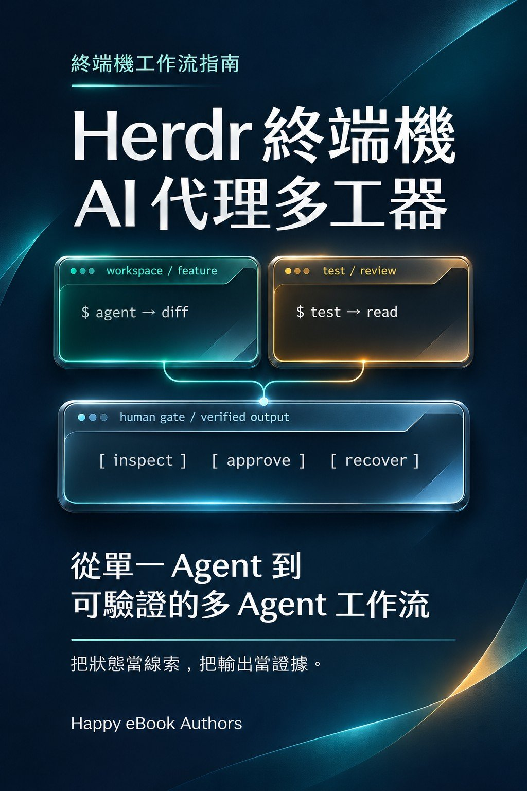

電子書
Herdr 終端機 AI 代理多工器
從單一 Agent 到可驗證的多 Agent 工作流

AI Coding / AI 學習
Herdr 終端機 AI 代理多工器
從單一 Agent 到可驗證的多 Agent 工作流
想在終端機裡同時管理多個 AI coding agent，並且知道工作究竟有沒有完成？本書以 Herdr 為核心，從 workspace、tab、pane 與持續工作階段開始，逐步說明 Agent 狀態的用途與限制，再帶你練習 CLI、自動化介面、Git Worktree、設定管理與 SSH 遠端工作流程。 每章都包含目標、前置條件、情境實作、示意輸出、錯誤恢復、安全停損、練習與過關條件。整合專案以隔離修改、執行測試、讀回輸出、審查差異及人工核准串起開發流程。書中明確區分 Herdr 的狀態訊號、命令回應與實際程式結果，不把 Agent 的 done 或測試程序退出當作正確性的保證。 本書以官方文件查核日期和版本差異說明命令；不同版本、作業系統、終端機與 Agent 的支援情況可能不同，請先以本機 help 與 API schema 核對。讀者需具備基本 shell 與 Git 知識，並準備可丟棄的練習專案。
作品介紹；目前未提供購買或試閱入口